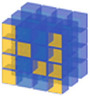
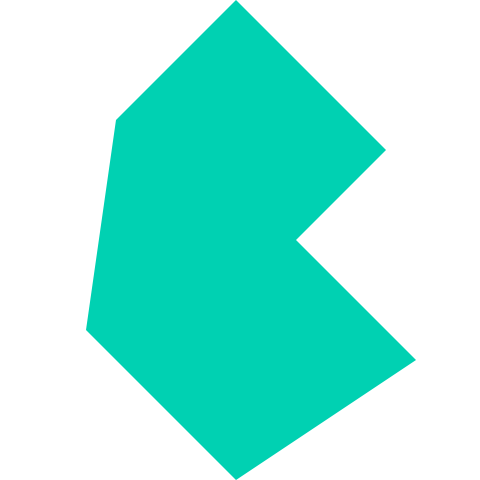

My Portfolio
Projects
Resume
Blogs
Medium
Blogger
Ajay Raj Nelapudi
Developer | Engineer | Writer
My education
St. Aloysius Anglo-Indian High School
ICSE - 81 %
Narayana Junior College
BIEAP - 88.4 %
Anil Neerukonda Institute of Technology and Sciences
B.Tech, CSE - 7.9 CGPA
Mission R&D Summer Camp
Team Leader, Team 1
I'm good with
C++
Java
Python
HTML
JavaScript
MySQL
Worked with
Django
SKLearn

Numpy

Bulma
Github
Deployed using
Heroku
AWS
Webhost
My projects
Towers Distributor |
Data Mining
| sklearn, numpy, scipy, folium, logging
Generates an efficient and future proof distribution of 5G cell sites over a given map by considering users' locations to regionalize using Spectral Clustering and distribute using K-Means Clustering.
Blog:
Medium
Repo:
Github
Dissimilar Vector Clustering |
Machine Learning
| sklearn, numpy
Clustering vectors with dissimilar features in the input vectors. Article published with Analytics Vidhya on Medium.
Blog:
Analytics Vidhya | Medium
Repo:
Github
Voteo |
Web Development
& Cloud Storage | Django, OAuth2, AWS S3 bucket, PostgreSQL, Bulma
Web app designed for photography contest voting held at Cursors, 2020.
Repo:
Github
Certificate Generator |
Automation
| opencv, numpy, img2pdf, tkinter
Software brought to life based on the necessity to create and email 300 certificates to students, for the Spyry Workshop held at ANITS college.
Repo:
Github
Fast Sparse Matrix Multiplication |
Algorithms
| C
Multiplies two sparse matrices by converting them to triplet format and taking advantage of its locality of reference to reduce the no of multiplications.
Repo:
Github
File Backup and Version Restore |
Systems Programming
| C++
This project helps to backup and restore different versions of separate files without maintaining a separate copy for each version. The Data Structure and Design are revised after experiencing drawbacks at the second round of Commvault's interview process for SDE.
Repo:
Github
These are just singleton instances of the areas I've explored. View my other 19 interesting projects at
my github profile.
I'm interning at
Read my articles at
Get in touch